7
Viewing Results in vsaPlot
- Overview
- Launching vsaPlot
- Viewing Results in vsaPlot
- Querying IR Drop and EM Results
- Synchronizing Multiple vsaPlot Windows
- Synchronizing vsaPlot with the Layout or Extracted View
Overview
vsaPlot is used to view the results of the IR drop and EM analysis that is performed in Power IR/EM. You can access vsaPlot both from within and outside the Virtuoso environment. Both these methods of accessing the tool are described in subsequent sections.
The tool has its own display area, menus, and windows that provide options for customizing the display of IR drop and EM violations in the main display area of the tool.
The key benefits of viewing the results of IR drop and EM analysis in vsaPlot are as follows:
- No dependency on the Virtuoso environment: vsaPlot lets you view the results of the analyses in its own display area, which means, you do not need the Virtuoso layout for displaying the plots. This is beneficial for those who do not have Virtuoso.
- Increased speed of visualization: In vsaPlot, the results are loaded and displayed quickly and when you change your selections, the plots are updated quickly. This performance enhancement is seen because vsaPlot is independent of Virtuoso. Therefore, the time that would otherwise be spent in calling the Virtuoso APIs to display the results on the Virtuoso layout is saved.
Launching vsaPlot
You can launch vsaPlot in two ways, from the VPS-L menu, or directly from the UNIX, shell, or xterm window.
Launching vsaPlot from the Shell
You can open vsaPlot directly from the UNIX, shell, or xterm window as follows:
<Result_DB> is the result directory in which the results of the IR drop or EM analysis are saved.
vsaplot in the shell without specifying the results directory. You can then click the File menu and Open submenu in the vsaPlot window to specify the results directory. This is detailed in the File Menu section.Launching vsaPlot from Power IR/EM
You can launch vsaPlot from Power IR/EM GUI in the following ways:
-
From the Connect to VsaPlot submenu of the VPS-L Main Menu. When you click this option, the Connect pop-up window opens. Provide the name of the MW Server Port and click Connect. This is shown in the images below.
Figure 7-1 Launching vsaPlot from VPS-L Main Menu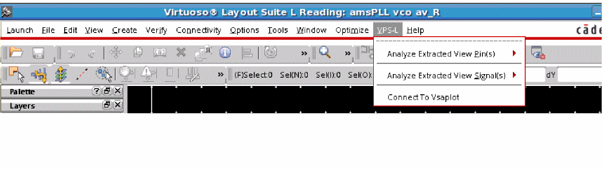Figure 7-2 Opening the Connect Pop-Up Window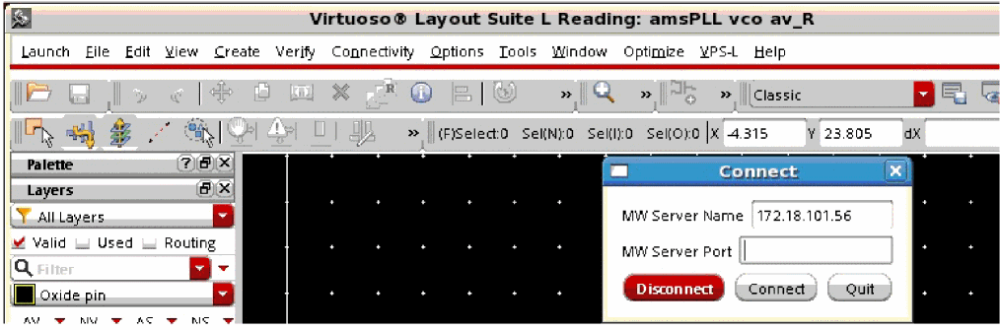 -
From the Load GIF Viewer submenu in the Analyze Extracted View Pin(s)/Signal(s) menus: When the vsaPlot window opens, you will need to load the analysis results by specifying the results directory. This is shown in the figure below.
Figure 7-3 Launching vsaPlot from Analyze Extracted View Pins/Signal (s) Form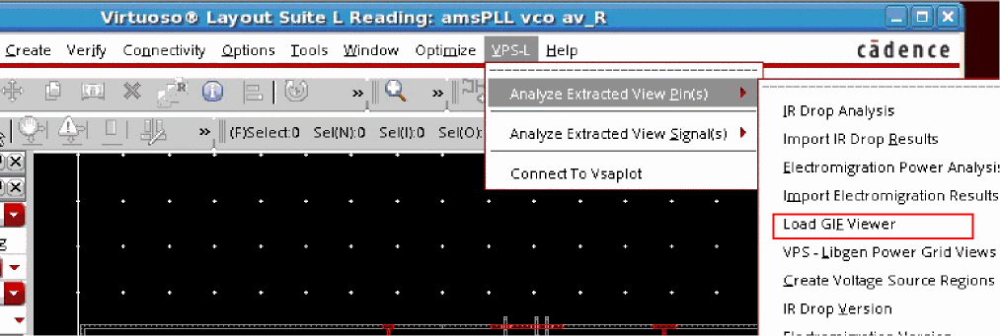 -
From the Load Gif Viewer option provided in the Electromigration Analysis Results form. The vsaPlot window opens. This is shown below.
Figure 7-4 Launching vsaPlot from the EM Results Form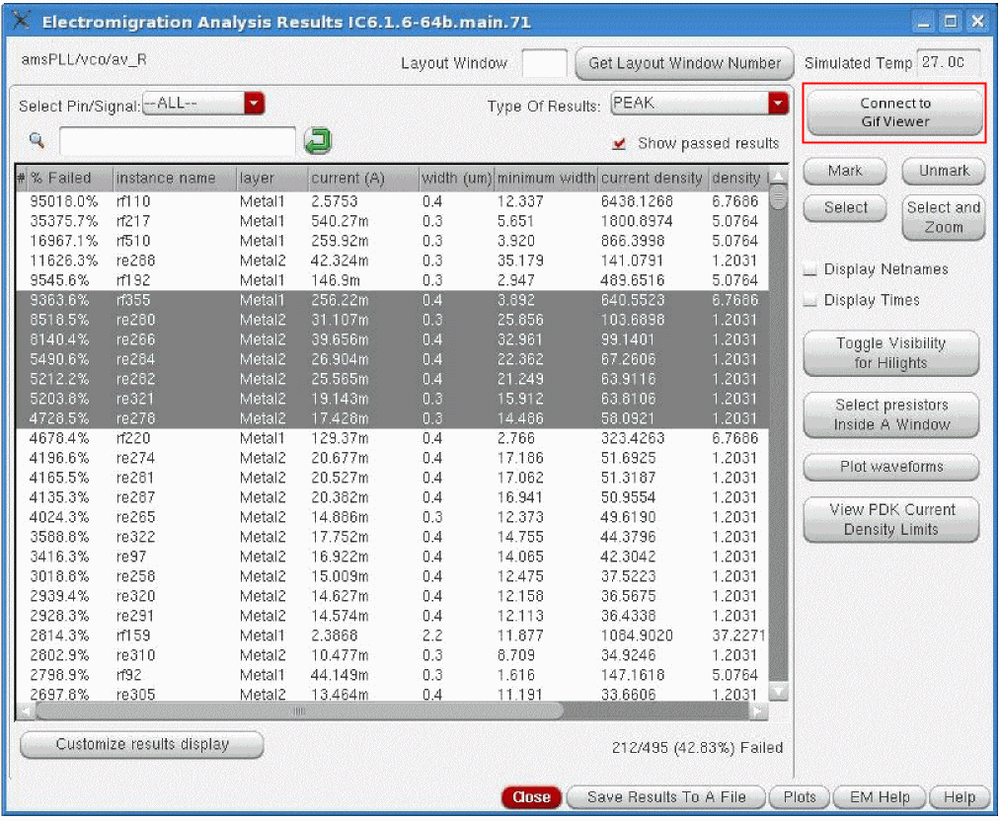 -
From the Load GIF Viewer option provided in the Save IR Commands To a File and Save Selected EM Commands to a File forms: When the vsaPlot window opens, the results of the IR drop/EM analysis will be automatically loaded. This is shown in the figure below.
Figure 7-5 Launching vsaPlot from the Save IR/EM Commands To A File Form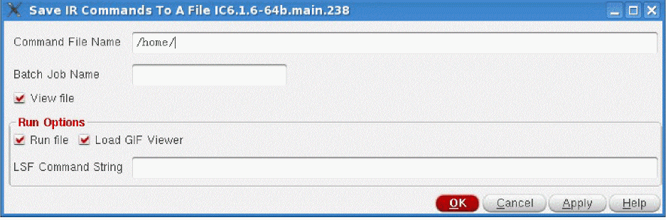
Viewing Results in vsaPlot
To view results of IR drop and EM analysis in vsaPlot, first specify the results directory. When you perform IR drop and EM analysis in Power IR/EM, the results of the analyses are stored in the VSA_RESULTS directory, which is located in the current directory, by default. If, however, the results directory is not located in the default location, you can specify the path of the result directory by using the following environment variable:
setenv _vsaDumpResultDBPath path
Before detailing the options available for viewing and customizing results in vsaPlot, let us first look at the main menus, submenus, and components of vsaPlot.
The following topics are covered in this section:
The main window of the vsaPlot is shown in the figure below.
Main Menus of vsaPlot
There are three main menus in vsaPlot.
These menus are detailed in subsequent sections.
File Menu
The File menu has the following submenus:
These submenus are detailed below.
-
The File – Open submenu provides the following options:
-
Open Results: Opens the VSA Result Directory pop-up window. Select the results directory and click Choose. This is shown below.You do not need to specify the result directory here if you have already specified it while launching the tool using theFigure 7-7 The Open VSA Result Directory Form
vsaplot<Result_DB> command in the shell.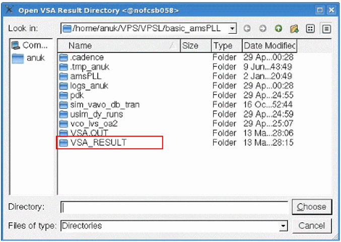
- Open New Window: Opens the VSA Result Directory pop-up window. Select the results directory and click Choose. This opens a new vsaPlot window for the specified results directory.
-
Open New Window and Sync: Opens the Main Window pop-up that lets you launch a sub-window and synchronize connected windows. This is shown below.
Figure 7-8 The Main Window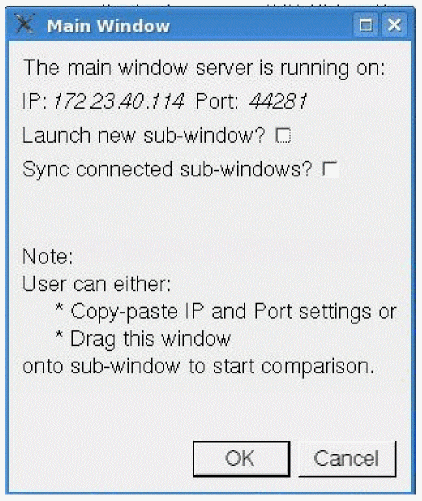 - Open New Window and Close: Opens the VSA Result Directory pop-up window. Select the results directory and click Choose. This opens a new vsaPlot window for the specified results directory and closes the already open window.
-
Open Results: Opens the VSA Result Directory pop-up window. Select the results directory and click Choose. This is shown below.
-
The File – Sync submenu provides the following options:. The following options are available:
-
Connect: Opens the Connect pop-up window that lets you provide the IP address and the port number of the window you want to connect to the current window.
Figure 7-9 The Connect Window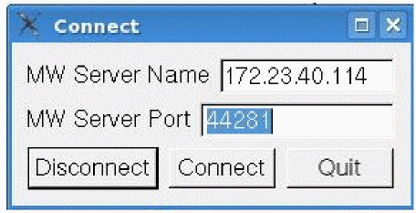 -
Settings: Opens the Settings pop-up window that lets you specify whether you want to synchronize zoom, probe, or both for the connected windows.
Figure 7-10 The Settings Window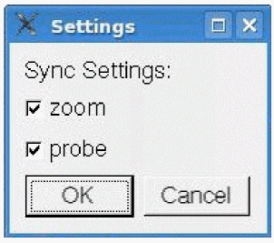For details of the synchronism function in vsaPlot, see Synchronizing Multiple vsaPlot Windows.
-
Connect: Opens the Connect pop-up window that lets you provide the IP address and the port number of the window you want to connect to the current window.
-
The File – Save submenu provides options to save a snapshot of the vsaPlot window. The following options are available:
- Window Region: Saves a snapshot of the entire window.
-
Image Region: Saves a snapshot of the display area of vsaPlot.When you select either of the two options, the Save Snapshot form opens. Specify the name and the format in which you want to save the image and click Save. This form is shown below.Figure 7-11 The Save Snapshot Form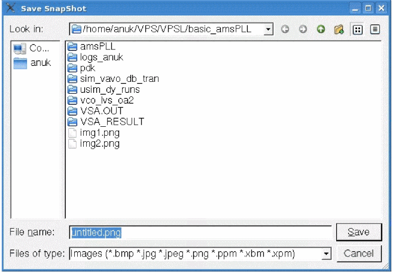
- The File – Quit submenu closes the vsaPlot window.
View Menu
The View menu has the following submenus:
These options are detailed below.
-
The View – zoom submenu provides options to zoom into or out of specific areas of the design in the display area. The available options and their corresponding keyboard shortcuts are shown in the figure below.
Figure 7-12 The View Menu of vsaPlot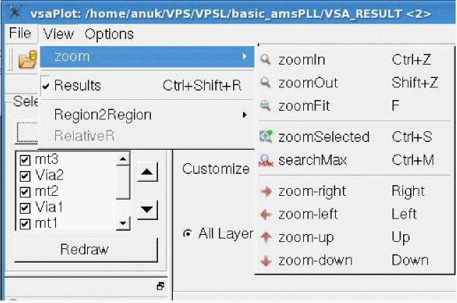-
zoomIn: Use this option to zoom into a portion of the design and view it in greater detail.
You can also use the scroll wheel of your mouse to zoom into a portion of the design. Each forward scroll of the scroll wheel zooms in one level. -
zoomOut: Use this option to display a larger area of the design in less detail. Each click zooms out two levels.
You can also use the scroll wheel of your mouse to zoom out of a detailed view of the design. Each backward scroll of the scroll wheel zooms out one level. - zoomFit: Use this option to fit the entire design within the design display area.
- zoomSelected: Use this option to zoom into a specific selected area of the design.
-
searchMax: Use this option to zoom into the worst violation in the selected area of the design.
- zoom-right: Use this option to pan the viewable window to the right. The equivalent bindkey is the Right arrow key.
- zoom-left: Use this option to pan the viewable window to the left. The equivalent bindkey is the Left arrow key.
- zoom-up: Use this option to pan up the viewable window. The equivalent bindkey is the Up arrow key.
- zoom-down: Use this option to pan down the viewable window. The equivalent bindkey is the Down arrow key.
-
zoomIn: Use this option to zoom into a portion of the design and view it in greater detail.
- The View – Results submenu provides the option to hide or unhide the Results window in vsaPlot. By default, this option is checked and the Results window is displayed on the right side of the display area.
-
The View – Region2Region submenu provides the option to view and compare results between specified regions in the display area of the vsaPlot. Select Point to specify two points on the layout or specify Rectangle or Ellipse to specify regions as rectangular shapes or ellipses respectively.
For details, see Displaying the Colormap for Point-to-Point and Region-to-Region Selection.
Options Menu
When you click the Options menu, the Options form opens. This menu is available only if your results directory has both IR drop and EM analysis results. If the results directory has only IR drop analysis results, the Options menu is not available in the main menu of vsaPlot. This is because the Options form lets you specify whether you want to view the analysis results in the pR-View (presistor view) or the Node-View (node view), and IR drop violations only have a node view. Therefore, this form is not relevant for IR drop analysis results. This form is shown below.
In this form, you can specify whether you want to view the analysis results in the pR-View (presistor view) or in the Node-View (node view). By default, the Results window displays results in the node view.
When you change your view selection, the Results window is updated accordingly. The updated “Name” column in the Results window for both views is shown below.
Figure 7-14 Viewing Results in Presistor View or Node View
Toolbar Widgets
The following row of widgets, located below the menus and above the design display area, includes shortcuts for the menu options detailed in the above section.
The descriptions of the widgets are provided in the table below.
|
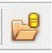
|
|
|
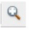
|
|
|
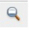
|
|
|
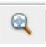
|
zoomFit – fits the entire design within the design display area. |
|
|
Search Maximum Value – zooms into and highlights the worst violation in the selected area of the design in the display area. |
|
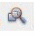
|
Enables region-to-region mapping. For details, see Displaying the Colormap for Point-to-Point and Region-to-Region Selection. |
|
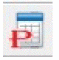
|
Partial/Full Results – updates the Results window to show partial or full results. In partial view, only the Pass/Fail, Layer, and J/Jmax columns are displayed. In full view, all columns are displayed. This is shown in Figure 7-21. |
|
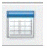
|
|
|
|
Click to reset results markings – clears the markers in the display area. |
|
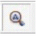
|
Auto Zoom – click to select a node or a presistor in the Results window. The display area will zoom into the selected presistor or node. This is shown below.
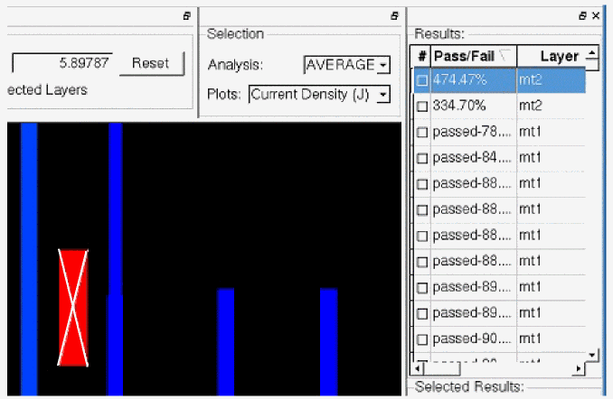
|
|
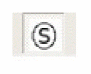
|
Shows Markers On Screen – shows the markers for the selected layers in the display area. |
|
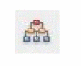
|
Opens the Main Window pop-up window that lets you launch a sub-window and synchronize connected windows. |
|
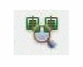
|
Opens the Connect pop-up window that lets you provide the IP address and the port number for the window you want to connect to the current window. |
|
|
Opens the Settings pop-up window that lets you specify whether you want to synchronize zoom, or probe, or both for connected windows. |
Main Components of vsaPlot
In addition to the menus and widgets provided in the vsaPlot, the main window of vsaPlot includes a display area and the following sub-windows that are used to customize the display of violations.
The main window of the tool highlighting the sub-windows is shown below.
Figure 7-15 Main Components of vsaPlot
The sub-windows are described in detail below.
Selecting the Layers
The Select Layers window is shown below.
-
Select the layers for which you want to view the violations. Click AV or NV to select or deselect all layers in the list box, respectively. Click the layer names to select specific layers. By default, the first layer is selected.
When you change your selection, click Redraw to apply your selection and update the view in the display area. - Change the order of layers by using the two buttons, with up and down arrows, provided next to the layers listed in the list box. Select any layer and then click the up or down arrow button to move the layer up or down in the list. The updated layer order is reflected in the extracted view of the design in the display area.
Specifying the Slider Range
In this window, a slider is provided to let you customize the violation range you want to view using a continuous RGB gradient. The vast range of color options provided by the RGB gradient makes it easier to view a specific range of violations. The ruler range of violation values for all or selected layers is provided next to the color spectrum. This is shown in the figure below.
Min and Max slider buttons (the blue and red button, respectively) are provided for customizing the ruler range for viewing the violations that fall within the specified range. You can move the Min Max slider buttons up and down to update the ruler ranges according to the new slider button positions.
When the slider buttons are used to specify the ruler range for violations, the selection is updated in the Customize Range fields in the Set Range sub-window. The violations above and below the slider marks are displayed in “deep red” and “deep blue”, respectively.
Select Display Out of Range to view the violations with values outside the specified range.
Specifying the Violation Range
In the Set Range sub-window, you can specify the violation range you want to view.
- Click All Layers to specify the total violation range. When All Layers is selected, the total violation range remains constant, irrespective of whether the layers are selected or deselected in the Select Layers window described in the previous section.
- Click Selected Layers to view the violation range for the layers selected in the Select Layers window. The specified range is updated in the slider range as well as in the Customize Range fields for the violations of the selected layers. The layout is highlighted accordingly.
- Type the range for which you want to view the violations in the text fields provided next to Customize Range. You can click Reset to reset the range to the previous setting.
The figure below shows the current density violations for the selected layers within the specified slider range.
Figure 7-18 Customizing the Slider Range for Viewing Current Density Violations for the Selected Layers
Selecting the Type of Analysis and Plots
In this window, you can select the type of analysis and the type of plot for which you want to view violations. The following three cyclic fields are available in this window
- Analysis: Types of analyses that can be performed
- Plots: Types of plots available for the the different analysis types
- Net(s): Nets on which the analysis is to be performed.
These are shown in the figure below.
Figure 7-19 The Selection Window
The following analysis types are available in the Analysis cyclic field:
- AVERAGE: Displays the current density violations based on the average value of the DC current for metal lines, vias, and contacts.
- PEAK: Displays the current density violations based on the maximum DC current for metal lines, vias, and contacts.
The following types of plots are available for the above analyses in the Plots cyclic field:
- Current (I): Displays the current violations for all or selected layers
- Current Density (J): Displays the current density violations for all or selected layers
- J/Jmax: Displays the current density ratio violations for all or selected layers
- IR: Displays the voltage violations for all or selected layers
- Voltage: Displays the voltage for all or selected layers
-
R: Displays the ratio of voltage drop and current (
IR/I) for all or selected layers
The results for current density ratio violations based on the peak current for all layers is shown in the figure below. The range of violations is customized using the slider.
Figure 7-20 Viewing Current Density Violations for the Peak Current for All Layers
Viewing the Results
The Results window displays the results of the IR drop or EM analysis. By default, the Results window opens in partial view, in which only the Pass/Fail, Layer, and columns are visible. You can click the Partial/Full Results widget to display the full results, which includes all the columns shown in the figure below.
Figure 7-21 The Results Window Displaying Full Results in pR-View
Querying IR Drop and EM Results
The following layout query features are supported in vsaPlot.
- Zooming into the Worst Violation in the Selected Area
- Retrieving the Values of All the Violations at a Specified Point on the Layout
- Displaying the Colormap for Point-to-Point and Region-to-Region Selection
Zooming into the Worst Violation in the Selected Area
You can select an area on the layout and zoom into the worst violation in the selected area by using the searchMax submenu in the View menu, or by clicking the corresponding toolbar widget.
The display area zooms into the worst violation in the selected area. The location of the maximum violation (x and y coordinates) is displayed in the bar at the bottom of the vsaPlot window. This is shown below.
Figure 7-22 Zooming into the Worst Violation in the Selected Area
Retrieving the Values of All the Violations at a Specified Point on the Layout
You can click anywhere on the design in the display area and retrieve the values of all the violations at that point. The results are displayed in the Selected Results section of the Results window. This section is only visible when you click anywhere on the design in the display area. The vsaPlot window displays the violations at that point and the worst violation value is marked by an arrow on the ruler range. This is shown below.
Figure 7-23 Retrieving the Values of the Violations at a Specified Point
Displaying the Colormap for Point-to-Point and Region-to-Region Selection
vsaPlot supports the display of the colormap between two points or regions selected on the layout. For this, the Region2Region submenu of the View menu is provided with four options; Point, Rectangle, Ellipse, and Clear. The Clear option is used to clear the selection.
Select Point to specify two points on the layout, or specify Rectangle or Ellipse to specify regions as rectangular shapes or ellipses in the display area, respectively. The tool resets the violation range, displaying colors from blue to red, between the two specified points or regions. Rectangular regions are specified in the figure below.
Figure 7-24 Displaying Region-to-Region Selection – Rectangular Shapes
To clear the point or region selection, click the Clear option in the View - Region2Region submenu or click the Esc button. The rectangles or ellipses will be cleared.
Click Reset in the Set Range group box to clear the colormap display between the selected points or regions.
Synchronizing Multiple vsaPlot Windows
vsaPlot supports the synchronism function, which involves opening multiple windows and synchronizing them using the menu options provided in the GUI. Three main synchronism functions are provided through the Open submenu of the File menu. These are the following:
- For a design open in a vsaPlot window, you can open a sub-window of another design to compare the two designs by using the Open New Window option.
- For two designs open in separate vsaPlot windows, you can specify the IP and port number of one window in the other, to compare the two designs by using the Open New Window and sync option.
- For two connected windows, you can specify the information you want to synchronize for comparing the two designs.
The above functions can also be performed using the toolbar widgets. For details, see Toolbar Widgets.
The synchronism function is detailed in the following sections:
Opening a Sub-Window to Initiate Synchronism
To initiate synchronism and start the comparison, follow any of these methods:
- Open a sub-window. For this, select File and then Open. Click Open New Window and Sync. The Main Window pop-up opens. Select Launch new sub-window? to open a sub-window of another design and start the comparison between the two designs.
- Open two designs in separate windows. Then open the Main Window pop-up in one window and drag it into the sub-window to connect the two windows and start the comparison.
- Open two designs in separate windows. Then open the Connect window pop-up and manually provide the IP and port settings of the sub-window to connect the two windows and start the comparison. This method can be used to connect two designs on different machines.
Synchronizing Options
Once the windows are open for comparison, you can select the options for synchronism depending upon your requirements. The following options are available:
-
Static synchronism: Once the windows are connected, the sub-window gets the state of the main window. This means that the main window's properties, such as the type of analysis selected in the Selection group box, the layers selected in the Select Layers group box, the display area settings, and the slider range, are copied to the sub-window. However, these settings are copied only once. If these settings are changed in the main window, you have to manually synchronize the sub-window from the main window again to bring the two windows back into the same state. This is shown below.
Figure 7-25 Opening a Sub-Window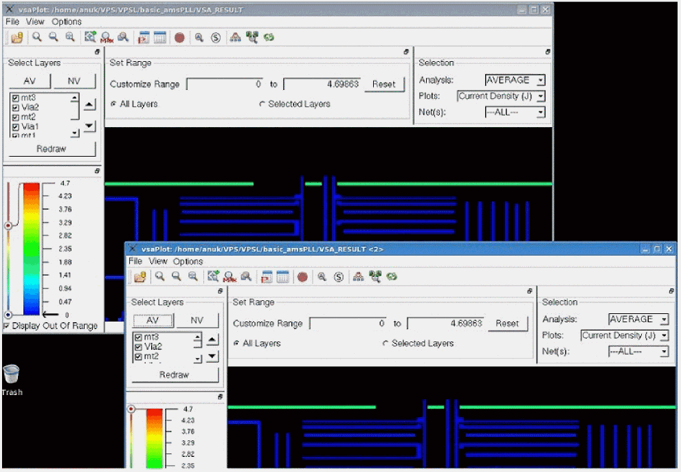 -
Dynamic synchronism: Properties such as zooming and probing are supported dynamically. You can filter the instruction received by the sub-window from the main window by using the synchronization settings. Open the Synch submenu in the File menu. Click Settings. The Settings pop-up window opens. Specify whether you want to synchronize zoom or probe, or both for the connected windows.
Selecting zoom means any zoom in or zoom out action performed in the main window will be replicated in the sub-window. Selecting probe means that if you probe any part of the design in the main window, the same action will be performed in the sub-window. This is shown below. By default, both zoom and probe actions are synchronized.
Figure 7-26 Dynamic Synchronism Probing between Connected Windows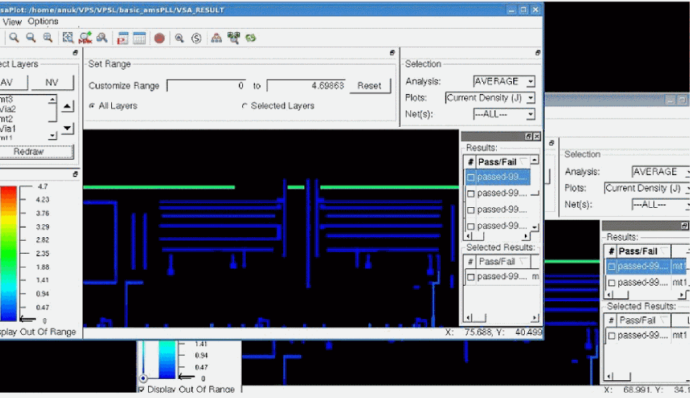
Synchronizing vsaPlot with the Layout or Extracted View
In addition to synchronizing multiple vsaPlot windows, you can synchronize a vsaPlot window with the Virtuoso layout/extracted cellview window. Once they are synchronized, the actions of zooming or scrolling in the vsaPlot window are replicated in the Virtuoso layout/extracted cellview window. This helps you map problematic areas seen in the vsaPlot to those in the Virtuoso layout/extracted cellview window correctly.
To synchronize the vsaPlot window with the layout/extracted view, follow these steps:
-
Load the Results directory, VSA_RESULT, using the following command:
vsaplot VSA_RESULT
-
In the Open submenu of the File menu, click New Window and Sync. The Main Window pop-up opens. Drag and drop the Main Window to the Connect pop-up window. The library/cell/view settings of the Main Window are populated in the MW Server Name field of the Connect window. The port information is populated in the MW Server Port field.This is shown below.
Figure 7-27 Transferring the Lib/Cell/View Information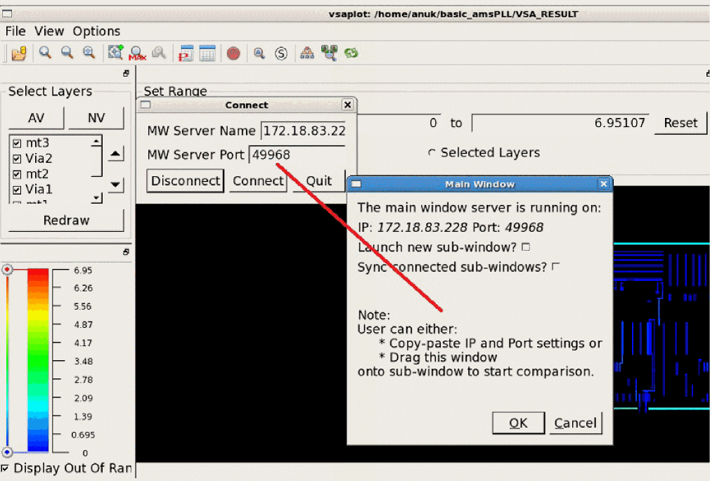 - Click Connect in the Connect pop-up window. The specified extracted or layout view opens. This is synchronized with the vsaPlot window.
Return to top